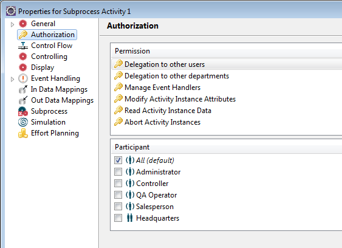

You can set authorization in the property dialogs of process definition and activity model elements.
Please refer to chapter Declarative Security in our Concepts section for details on the scope and impact of the different model element permissions.
To set the authorization in the properties dialog of an element:
Beneath the Permission list, the possible participants for a selected permission are displayed with checkboxes. Possible participants are all roles, organizations, the administrator and the participant pertaining to an activity (Owner). Additionally the All option is provided to give grant to everyone. Grants like Owner and All, not pertaining to specific participants, are displayed cursive.
The permission set by default, is also enabled per default in the dialog. It is marked as default in brackets after the grant name.
To remove permission from all participants, deselect all provided entries.
Note
Be aware that if disabling all permissions and closing the dialog, the
permission is reset to the default permission and persisted again. After
reopening the dialog you notice the default permission selected again.
Please also refer to the section Overwriting default Values of Declarative Security Grants of concept chapter Declarative Security for details on overwriting default values.
If no participant is selected, the permission is given to the default participant provided for this action. The administrator is always granted, regardless of the grants set for the authorization property.
Figure: Setting the Authorization in the Property Page.
The data property pages provide the following permissions:
Figure: Setting the Authorization for Data.
The process definition property pages provide the following permissions:
Figure: Setting the Authorization for a Process
Definition.
The activity property pages provide the following permissions:
The entitlement Delegation to other departments allows the user to delegate work from one department to another.
To determine if an activity delegation succeeds with the "Delegation to other users" permission, or requires the "Delegation to other departments" permission, depends on the following cases. In case the input for delegation is:
then the delegation permissions needed are:
Interactive activities additionally can have the grant Owner, which represents the participant associated with the activity. This is useful for example to restrict the abort functionality for subprocess activities. Thus it can be avoided that subprocess activities are aborted and as a consequence the whole process is terminated.
If the activity instance is in the participant worklist of a scoped participant, the Owner grant is extended to the worklist visibilities. The participant and department of the activity will then have to match with the logged-in user in order to allow the action.
Figure: Setting the Authorization for an interactive
Activity.
Please note that additionally to the participant given the permission for aborting activity instances, the administrator always has the right to abort.

Figure: Setting the Authorization for a non-interactive
Activity.